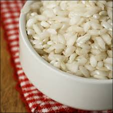

Ingredients:
- Butter or cooking spray for the souffle dish
- 2/3 cup Arborio rice
- 4 3/4 cups milk
- 2 3-inch cinnamon sticks
- 1.5 teaspoons ground cardamom
- Grated zest of 1 lemon
- 2 teaspoons cardamom pods, cracked with the side of a knife
- 3/4 cup heavy cream
- 3 eggs
- 2 egg yolks
- 1/4 teaspoon salt
- 1 1/3cups sugar
Recipe:
-
Lightly butter, a 1 1/2-quart soufflé dish
- In a medium saucepan, bring 2 cups water to a boil then stir in rice and cook for 15 minutes
- Drain, then add rice to a medium saucepan with 4 cups of the milk, the cinnamon sticks and the ground cardamom - bring to a boil, lower the heat, and simmer for 30 minutes, stirring occasionally, or until the rice is very tender
- Drain away any milk that has not been absorbed, then put rice into a medium bowl and stir in the lemon zest
- To make the custard, in a medium saucepan, over medium-low heat, combine the remaining 3/4 cup milk, the cardamom pods and the cream
- In a medium bowl whisk together the eggs, yolks, salt and 1/3 cup of the sugar. When the milk mixture comes to a simmer, slowly ladle it into the egg mixture, whisking constantly. Pour the mixture through a strainer back into the pan (discarding cardamom), then stir in the rice
- In a heavy small saucepan stir together the remaining cup of sugar and 1/4 cup water and bring to a boil. Cook over high heat for 5 to 8 minutes, swirling the pan occasionally, until the mixture turns a honey-amber shade. Immediately pour into the souffle dish, swirling to make sure the caramel coats about 3/4 of the height of the dish
- Without waiting for the caramel to harden, immediately pour the rice mixture into the caramel-coated souffle dish. Fill a large roasting pan halfway with very hot tap water, and place the souffle dish in the roasting pan. Cover roasting pan tightly with foil and punch several holes in the foil in the corners of the roasting pan. Place the pan in the center of the oven and bake at 300 degrees for about 2 hours (start checking after 1 hour and 45 minutes) or until the custard is set around the edges but the center still jiggles slightly. Remove dish from the water bath, cool on a rack, then refrigerate until set and cold, at least 6 hours or preferably overnight
Flan History
This dish was originally made by Mike's father's Grandmother. The recipe was brough over from Puerto Rico, and was one of Mike's dad's favorite dessert's gorwing up. Mike was lucky enough to have it made from him by his great-grandmother many times.